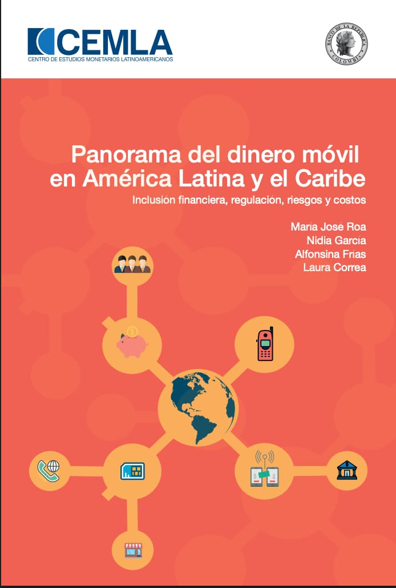

Mobile Money in Latin America & the Caribbean
During my time at the Center of Monetary Studies of Latin America (CEMLA), we created this document to provide a general overview of mobile money in Latin America and the Caribbean (LAC). The document presents and discusses information gathered from various sources regarding the mobile money models established in the region, their relationship with financial inclusion, associated services and products, the regulatory framework, potential risks, interoperability, and the costs of mobile money services and products.

Read here
CEMLA Repository